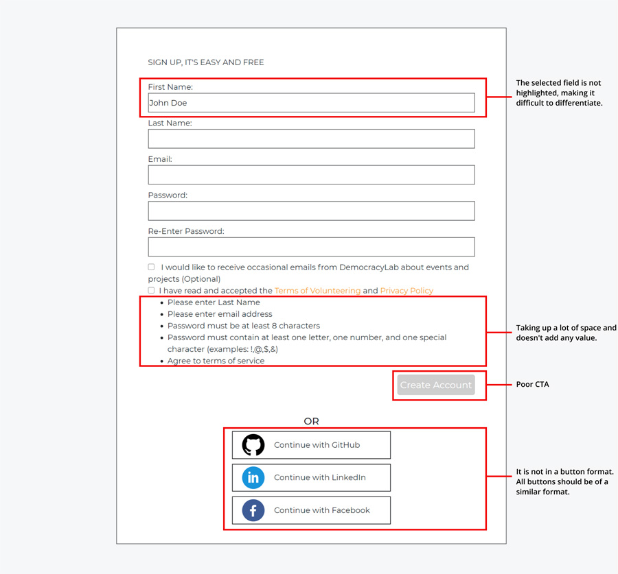
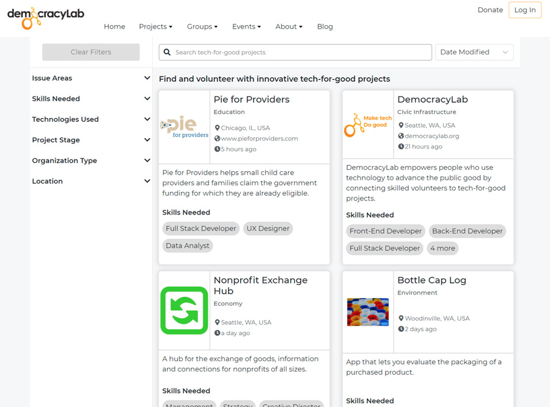

Company / Democracy Lab
Role / Sole UX/UI designer for the below pages
Tools / Figma
Timeline / 4 weeks
To re-design a user-friendly experience on the website, aiming to increase the percentage of visitors signing-up on the application and volunteering to tech-for-good projects
To scope the problems with the solution, I collected feedback from a user trying to signup and
volunteer to a project. Discovered that there were few frictions for volunteering who tries to volunteer
to a project on the website that can be improved with better design and user flow
Dividing the flow into 2 focus areas,
1. Focus area 1 - User signing up on the website.
2. Focus area 2 - User then proceeding to volunteer for a suitable project

I studied material design and other articles as guidelines to design the components such as form field, buttons, spacing and dimensions. Increased the size of the button and center-aligned it to have a clear CTA.
Iterated my design several times to make it accessible by adding the labels, changing font size and colors.
Re-designed Signup form goes on a clean, plain background so it's distraction-free for the user who is signing up on the website. Use of illustration and wordings below it to explain the advantage of signing up to Democracy Lab.
Cleaned up social media buttons, as a result, there is ample of white space on either side, making the design look more clean.
Feedbacks are very important for the user hence fields should get highlighted when selected.
Error Message - Went through the user flow to design error message at every step for which the user might need guidance. Aimed to reduce friction for the users and keep them on track to help them successfully complete signing up.

I made a list of issues on this page. I did a small survey to validate or to gauge if these are
actual user paints not a pain point noticed by a designer. I conducted Tree testing on both the
current website and my design to test the findability of the key information to successfully
completing the task.
Result
Old Design (Current website) -
An overall score (3 out of 10)
Time is taken >20 sec
Success rate 33%
Proposed Design -
An overall score (3 out of 10)
An overall score (9 out of 10)
Time is taken < 12 sec
Success rate 88%
This web page has many sections and clustered details, it is very easy for the user to feel lost. I used UX design guidelines can transform a messy collection of information into a comprehensible, interactive resource for your users.
As we know users scan from left to right, top to bottom in the shape of F. So I rearranged the sections on this page, putting the most important information on the top, and left side of the page.
Show Details Upon Request - Added more button in 'About section' and 'Team section' in that way user is given enough material to understand the premise and is provided with further details upon request.
The user should always know where they are, how they got there, and how to get back to home base so added Breadcrumb navigation.
2 CTA- On the current design, It had 2 CTA one below another with same dimension and color. I redesigned by given priority by increasing the color size to " volunteer to project" compared to "contact project".
1. Finding the right balance - Designing solutions that align with the business goals, designing the overall experience and user-friendly site and make sure it meets all the accessibility guidelines.
2. I enjoyed supporting our Lead UX designer with production tasks, getting and incorporating the feedback, and working very closely with developers.
3. It was thrilling to stitch story of my work to make impactful presentations in our design meetings, for our Executive director, Lead UX designers, Technical lead and fellow designers.